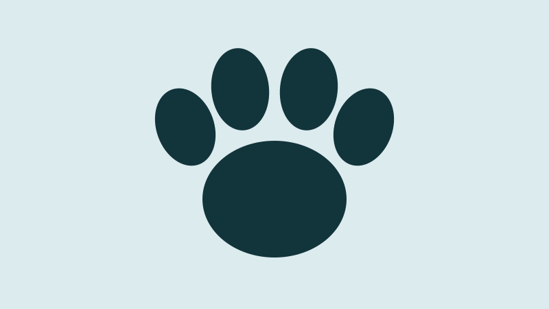

Missão
Resgatar, cuidar e reabilitar animais em situação de rua até que encontrem um lar.
Resgatamos cães e gatos abandonados, cuidamos da saúde de cada um e buscamos famílias que os recebam de verdade.
Quero ajudar
A Patas de Rua é uma organização sem fins lucrativos formada por voluntários que acolhem animais abandonados, tratam feridas e doenças e promovem a adoção responsável.
Resgatar, cuidar e reabilitar animais em situação de rua até que encontrem um lar.
Uma cidade onde nenhum animal precise viver e morrer abandonado.
Respeito à vida, transparência no uso das doações e compromisso com a guarda responsável.
Endereço: Rua Exemplo, 123, Centro, Sua Cidade/UF, CEP 00000-000
Telefone: (11) 4000-0000
E-mail: contato@patasderua.org.br
Atendimento: segunda a sábado, das 9h às 17h